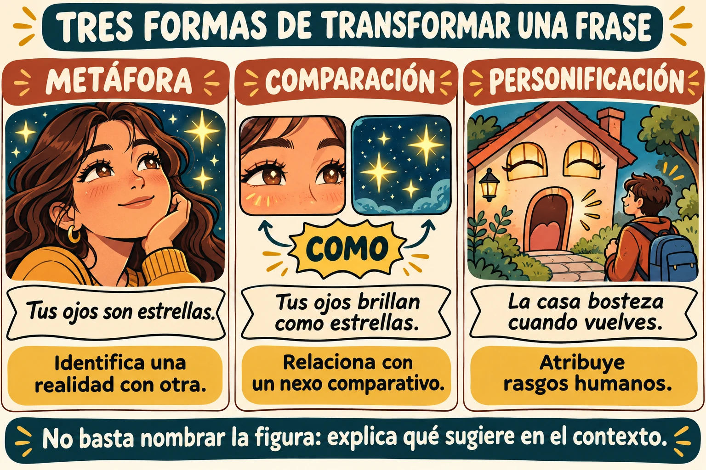
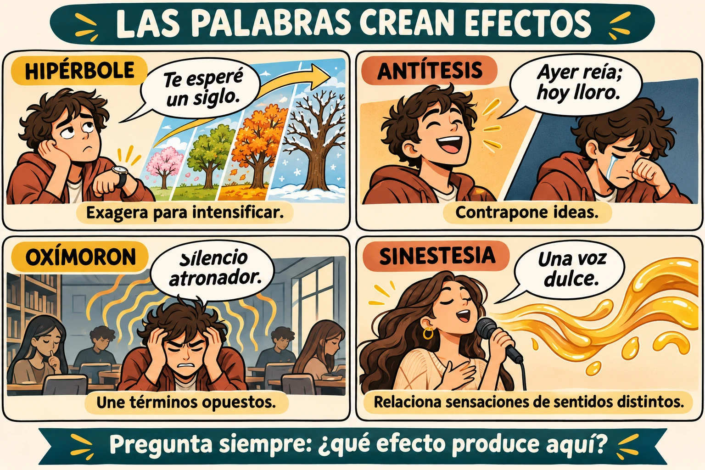

TÉCNICO PROFESIONAL: 2 SUR 1147 – FONOS (71) 2615416 · 2615410
BÁSICA y LICEO: 11 ORIENTE 1751 – FONOS (71) 2615454 · 2615457
www.salesianostalca.cl – cest@salesianostalca.cl · TALCA - REGIÓN DEL MAULE - CHILE
Lengua y Literatura · 2.º medio HC · Prof. Francisco Javier Núñez Valenzuela
Cómo el lenguaje transforma lo que leemos
Nombre
RUT
Profesor
Francisco Javier Núñez Valenzuela
Curso
N° Lista
Asignatura
Lengua y Literatura
Guía N°
Revisado
Semestre
II
Fecha
Puntaje
Práctica formativa
Objetivo
Interpretar poemas y relaciones literarias explicando el efecto de figuras, símbolos y tópicos mediante evidencia del texto.
Habilidades
Interpretar, aplicar, justificar y evaluar con evidencia.
INSTRUCCIONES
1. Observen las imágenes y lean los ejemplos resueltos. 2. Apliquen cada explicación en el cuaderno, según su consigna. 3. Respondan individualmente las alternativas y tareas escritas de esta guía. 4. Revisen una respuesta con su pareja y corrijan antes de entregar.
Antes de comenzar
Comparen «Estoy triste» con «La casa perdió su voz». Escriban qué agrega la segunda expresión y qué información todavía necesitan para interpretarla.
Normas de trabajo
Escuchen y fundamenten sus ideas con respeto. Cuiden los materiales y la procedencia de la información. No se permite el uso de celular.
Una pregunta para toda la clase
¿Qué expresa un poema que una descripción literal no alcanza a decir?
Fecha programada: 2026-11-25. Textos y ejercicios originales de CEST. Referencias conceptuales: textos escolares MINEDUC de 1.º y 2.º medio. No es una prueba oficial PAES.
Observamos y comprendemos · Una relación cambia la frase

La metáfora identifica una realidad con otra; la comparación las relaciona con un nexo como «como».
La personificación atribuye rasgos humanos. El efecto depende del contexto del poema.
Ejemplo resuelto. «La casa bosteza cuando vuelves» personifica el lugar y puede sugerir que despierta ante el regreso.
Ahora aplica. Individualmente, transformen «La calle está silenciosa» en una comparación y una personificación. Escríbanlas en el cuaderno y expliquen qué sugiere una de ellas. Tienen 2 minutos.
Escribe una idea o ejemplo aquí y desarrolla la respuesta en tu cuaderno.
Observamos y comprendemos · Exagerar, oponer y mezclar sentidos

La hipérbole exagera. La antítesis contrapone ideas; el oxímoron une términos opuestos en una expresión.
La sinestesia relaciona sensaciones de sentidos distintos, como el oído y el gusto en «voz dulce».
Ejemplo resuelto. «Te esperé un siglo» exagera la espera; no entrega una duración literal.
Ahora aplica. En parejas, escriban en el cuaderno una exageración y una expresión que mezcle dos sentidos. Cambien de cuaderno: identifiquen el recurso y expliquen su efecto. Tienen 2 minutos.
Escribe una idea o ejemplo aquí y desarrolla la respuesta en tu cuaderno.
Observamos y comprendemos · ¿Quién habla y cómo suena?
El hablante lírico es la voz del poema; puede diferir de su autor. En la actitud apostrófica se dirige a alguien o algo.
La anáfora repite al inicio. Cada línea es un verso; la rima relaciona sonidos desde la última vocal tónica.
Ejemplo resuelto. «Aquí espero / aquí recuerdo / aquí respiro» repite «aquí» al comienzo: anáfora. «Portal» y «cristal» tienen rima consonante.
Ahora aplica. Individualmente, escriban tres versos en el cuaderno que comiencen con la misma palabra y se dirijan a un objeto. Expliquen qué sensación produce la repetición. Tienen 2 minutos.
Escribe una idea o ejemplo aquí y desarrolla la respuesta en tu cuaderno.
Aplicamos · Definiciones y oraciones
Elige la opción que explica mejor el ejemplo. Puedes consultar las fichas.
1. «Tus palabras son puentes». ¿Qué recurso identifica palabras y puentes?
A. Metáfora.
B. Comparación explícita.
C. Personificación.
D. Aliteración.
Respuesta: ______
2. «Tu voz es como una lámpara». ¿Qué recurso establece una semejanza explícita?
A. Enumeración.
B. Comparación.
C. Metáfora sin nexo.
D. Personificación.
Respuesta: ______
3. «La ciudad bosteza». ¿Qué figura atribuye una acción humana a la ciudad?
A. Aliteración reiterada.
B. Metonimia de autor.
C. Personificación.
D. Comparación explícita.
Respuesta: ______
4. «Te esperé mil años». En una espera cotidiana, ¿qué figura intensifica su duración?
A. Comparación explícita.
B. Metonimia de autor.
C. Aliteración.
D. Hipérbole.
Respuesta: ______
Aplicamos · Definiciones y oraciones
Elige la opción que explica mejor el ejemplo. Puedes consultar las fichas.
5. «Afuera ríen; adentro lloran». ¿Qué figura contrapone ideas?
A. Antítesis.
B. Personificación.
C. Metonimia.
D. Comparación explícita.
Respuesta: ______
6. «Un silencio ensordecedor». ¿Qué figura une términos opuestos en una expresión breve?
A. Enumeración.
B. Oxímoron.
C. Comparación explícita.
D. Personificación.
Respuesta: ______
7. «Leí a Gabriela Mistral». ¿Qué figura usa a la autora para referirse a sus obras?
A. Personificación.
B. Aliteración.
C. Metonimia.
D. Comparación explícita.
Respuesta: ______
8. «Una voz azul». ¿Qué figura combina percepciones de sentidos distintos?
A. Comparación explícita.
B. Personificación.
C. Metonimia.
D. Sinestesia.
Respuesta: ______
Aplicamos · Definiciones y oraciones
Elige la opción que explica mejor el ejemplo. Puedes consultar las fichas.
9. «Aquí espero. Aquí recuerdo. Aquí vuelvo». ¿Qué figura repite una palabra al comienzo?
A. Anáfora.
B. Comparación explícita.
C. Personificación.
D. Metonimia.
Respuesta: ______
10. «Susurra suave la seda». ¿Qué recurso se reconoce en la repetición de sonidos?
A. Enumeración de lugares.
B. Aliteración.
C. Comparación explícita.
D. Personificación del hablante.
Respuesta: ______
11. «Y llega y pregunta y espera». ¿Qué figura reitera la conjunción?
A. Metonimia de autor.
B. Asíndeton.
C. Polisíndeton.
D. Comparación explícita.
Respuesta: ______
12. «Corre, salta, tropieza, vuelve». ¿Qué figura omite conjunciones en la serie?
A. Comparación explícita.
B. Polisíndeton.
C. Personificación.
D. Asíndeton.
Respuesta: ______
Aplicamos · Definiciones y oraciones
Elige la opción que explica mejor el ejemplo. Puedes consultar las fichas.
13. «Puerta, no guardes mi miedo: déjame salir». ¿Qué actitud lírica predomina al dirigirse a la puerta?
A. Carmínica: expresa el yo sin un destinatario interpelado.
B. Enunciativa: describe un paisaje sin dirigirse a él.
C. Narrativa: cuenta un suceso con varias acciones pasadas.
D. Apóstrofe o actitud apostrófica.
Respuesta: ______
14. «La ventana estaba cerrada» / «La ventana guardaba mi pena». ¿Qué cambia en el segundo enunciado?
A. La oración sitúa el objeto en una época histórica.
B. La ventana recibe una medida física más precisa.
C. La descripción elimina la presencia de una emoción.
D. El objeto adquiere una función afectiva figurada.
Respuesta: ______
15. Un poema termina sus versos con «casa» y «rama». ¿Qué coincidencia permite reconocer rima asonante?
A. Las consonantes s y m desde el inicio de las palabras.
B. El número de letras de cada palabra final.
C. Las vocales a–a desde la última vocal tónica.
D. Todas las letras desde la última vocal tónica.
Respuesta: ______
16. «¿Dónde están las voces de ayer?», pregunta un poema actual. ¿Qué permite afirmar esa pregunta por sí misma?
A. Que reproduce una cita de una obra identificable.
B. Que puede retomar el tópico ubi sunt.
C. Que pertenece necesariamente al Barroco español.
D. Que su autor vivió la desaparición de esas personas.
Respuesta: ______
Leemos · La casa que aprende
Poema
La casa se quedó sin voz
cuando partiste.
El reloj masticaba la tarde
y yo contaba sus migajas.
Aquí tu taza,
aquí la silla,
aquí la luz que no sabía
sobre qué hombro descansar.
Hoy abrí las ventanas:
entró una risa de la calle.
No era la tuya.
Dejé que se quedara.
Texto original de Estudia CEST, creado para esta práctica. No corresponde a una prueba oficial.
Subraya un indicio relevante y escribe qué permite comprender.
Aplicamos · La casa que aprende
17. ¿Qué actitud lírica predomina en el poema?
A. Carmínica, por la expresión de una experiencia interior.
B. Apostrófica, porque todo el poema ordena acciones a un público.
C. Enunciativa, porque elimina las emociones de la voz que habla.
D. Informativa, porque entrega instrucciones verificables para una mudanza.
Respuesta: ______
18. ¿Qué efecto produce «El reloj masticaba la tarde» en la primera estrofa?
A. Presenta una alegría que se mantiene sin cambios hasta el cierre.
B. Vuelve perceptible el desgaste de la espera.
C. Describe literalmente el mecanismo interior de un reloj.
D. Prueba que la persona ausente regresará durante la tarde.
Respuesta: ______
19. ¿Qué aporta la repetición de aquí en la segunda estrofa?
A. Explica que taza, silla y luz pertenecen a nuevos visitantes.
B. Sustituye la expresión de ausencia por una instrucción de orden doméstico.
C. Insiste en las huellas cotidianas de la persona ausente.
D. Anuncia que se describirán tres ciudades diferentes.
Respuesta: ______
20. ¿Qué interpretación del cierre integra mejor el poema completo?
A. El hablante olvida por completo a la persona que había partido.
B. La risa confirma el retorno físico de la persona a su antigua casa.
C. Abrir las ventanas restaura literalmente la voz de los objetos domésticos.
D. Aceptar otra risa abre una posibilidad sin borrar la ausencia.
Respuesta: ______
Elige una respuesta y justifícala con una pista de la lectura.
Aplicamos · La casa que aprende
21. ¿Qué acción del hablante precede a la entrada de la risa?
A. Abrir las ventanas.
B. Devolver la taza a quien partió.
C. Contar las migajas de la tarde.
D. Sacar la silla hacia la calle.
Respuesta: ______
22. ¿Qué aporta que la taza y la silla aparezcan como «tu» taza y «la» silla en la estrofa de la ausencia?
A. Los objetos prueban que la casa está deshabitada.
B. Los objetos indican el oficio de la persona que se fue.
C. Los objetos cotidianos hacen perceptible a quien falta.
D. Los objetos anuncian la fecha en que alguien regresará.
Respuesta: ______
23. ¿Qué función cumple «No era la tuya» entre la llegada de la risa y la aceptación final?
A. Anuncia que el hablante decide expulsar la nueva risa.
B. Explica por qué la persona ausente abandonó la casa.
C. Revela que el hablante confundió la voz con la del reloj.
D. Aclara que la apertura no depende del regreso de quien partió.
Respuesta: ______
24. Una lectura afirma: «La nueva risa borra todos los recuerdos anteriores». ¿Qué elemento la limita?
A. La indicación de una conversación con la persona ausente.
B. La presencia de versos sin una rima regular.
C. La descripción del reloj como una máquina reparada.
D. La distinción entre la risa nueva y quien falta.
Respuesta: ______
Elige una respuesta y justifícala con una pista de la lectura.
Leemos · Antes de cerrar el día
Poema
¿Dónde están las voces
que llenaban esta plaza?
El polvo no responde
y la fuente sigue en marcha.
No esperes que el verano
prometa otra mañana:
comparte el pan de hoy,
abre tu puerta y canta.
El tiempo cruza el puente
sin devolver sus aguas.
Tu mano, mientras puede,
que encuentre otra mano cercana.
Texto original de Estudia CEST, creado para esta práctica. No corresponde a una prueba oficial.
Subraya un indicio relevante y escribe qué permite comprender.
Aplicamos · Antes de cerrar el día
25. ¿Qué tópico se reconoce principalmente en la pregunta de la primera estrofa?
A. Ubi sunt.
B. Carpe diem, porque ordena disfrutar un encuentro que ya ocurre.
C. Vita somnium, porque declara que la plaza es solo un sueño.
D. Contemptus mundi, porque exige abandonar todos los bienes materiales.
Respuesta: ______
26. ¿Qué relación establece la segunda estrofa con la fugacidad del tiempo?
A. Defiende esperar inmóvil hasta que vuelvan las voces del pasado.
B. Invita a compartir el presente sin asegurar un mañana.
C. Promete que el verano siguiente repetirá los mismos encuentros.
D. Rechaza el valor de las relaciones humanas por ser pasajeras.
Respuesta: ______
27. ¿Cómo funciona el puente en la tercera estrofa?
A. Permite que las aguas regresen a su lugar de origen.
B. Demuestra que la plaza se encuentra abandonada desde una inundación.
C. Concreta el paso irreversible del tiempo.
D. Informa dónde y cuándo se construyó una obra pública.
Respuesta: ______
28. ¿Qué afirmación sobre los dos poemas resulta mejor sustentada?
A. Ambos garantizan que el pasado regresará si se conservan objetos.
B. El primero entrega información objetiva y el segundo elimina toda emoción.
C. El segundo niega el paso del tiempo y el primero confirma que no existe.
D. Ambos enfrentan una pérdida y proponen una apertura hacia otros.
Respuesta: ______
Elige una respuesta y justifícala con una pista de la lectura.
Aplicamos · Antes de cerrar el día
29. ¿Qué acciones propone el hablante en la segunda estrofa?
A. Recuperar las voces, detener la fuente y cruzar el puente.
B. Compartir el pan, abrir la puerta y cantar.
C. Esperar el verano, cerrar la puerta y guardar el pan.
D. Responder al polvo, volver al pasado y buscar la plaza.
Respuesta: ______
30. ¿Qué contraste construyen las voces ausentes y la fuente que «sigue en marcha»?
A. La pérdida humana frente a una continuidad del entorno.
B. La plaza llena frente a una fuente que dejó de funcionar.
C. El regreso de la comunidad frente al abandono del agua.
D. La alegría de quien habla frente a una orden de callar.
Respuesta: ______
31. ¿Qué relación establece «mientras puede» con la invitación a acercar una mano a otra?
A. Exige encontrar a las mismas personas que estaban en la plaza.
B. Asegura que el encuentro impedirá el paso del tiempo.
C. Presenta el vínculo con otros como una oportunidad limitada.
D. Sugiere esperar a que la otra persona pierda su fuerza.
Respuesta: ______
32. ¿Qué comentario integra mejor la primera y la última estrofa?
A. La ausencia de voces demuestra que la plaza será demolida.
B. La marcha de la fuente permite recuperar a quienes partieron.
C. La conciencia de la pérdida desemboca en una invitación al encuentro.
D. La cercanía de otras manos elimina la pregunta por el pasado.
Respuesta: ______
Elige una respuesta y justifícala con una pista de la lectura.
Leemos · Una forma antigua, nuevas preguntas
Artículo de contexto literario
Reconocer un recurso literario exige observar cómo funciona en una obra. Una metáfora no expresa siempre tristeza ni una repetición significa siempre alegría. El lector relaciona las palabras, su posición y el conjunto del texto. La etiqueta ayuda a describir una decisión expresiva; la interpretación explica para qué sirve en ese caso.
También las formas y los tópicos viajan entre épocas. El soneto tradicional organiza catorce versos endecasílabos en dos cuartetos y dos tercetos. Su distribución puede ordenar una tensión y una respuesta, pero no obliga a todos los poemas a pensar lo mismo. Para reconocerlo no basta contar versos: hay que observar su organización y revisar su métrica.
En obras del Barroco español son frecuentes preocupaciones por la fugacidad, el desengaño y la relación entre apariencia y realidad. Siglos después, un poema actual puede retomar carpe diem o ubi sunt. Esa coincidencia no convierte automáticamente al poema en una obra barroca: permite examinar una relación con una tradición y los cambios de sentido que introduce el nuevo contexto.
Del mismo modo, el Romanticismo valoró la subjetividad, la libertad y la originalidad, pero una voz que dice yo no basta para clasificar una obra como romántica. La interpretación requiere otros rasgos y antecedentes. Una alusión o una parodia puede transformar una obra anterior sin reproducirla: comprender esa relación exige leer ambas y distinguir semejanzas, diferencias y efectos.
Una reseña crítica puede explicar estas decisiones con evidencia. En vez de afirmar que un poema es bonito porque tiene metáforas, puede mostrar cómo una casa personificada expresa una ausencia y cómo el final modifica ese estado. La valoración se vuelve discutible y examinable porque ofrece razones concretas.
Texto original de Estudia CEST, creado para esta práctica. No corresponde a una prueba oficial.
Subraya un indicio relevante y escribe qué permite comprender.
Aplicamos · Una forma antigua, nuevas preguntas
33. Según el texto, ¿qué caracteriza al soneto tradicional?
A. Catorce versos endecasílabos en dos cuartetos y dos tercetos.
B. Catorce versos de cualquier medida, distribuidos siempre en una sola estrofa.
C. Doce versos en tres estrofas que mantienen necesariamente una misma emoción.
D. Una repetición inicial que garantiza por sí misma una clasificación barroca.
Respuesta: ______
34. ¿Por qué un tópico antiguo no basta para clasificar un poema actual como barroco?
A. Un poema actual que retoma una tradición necesariamente plagia la obra anterior.
B. Un recurso compartido puede adquirir otro sentido en un nuevo contexto.
C. Todos los tópicos antiguos desaparecieron antes de la literatura contemporánea.
D. La clasificación de una obra depende exclusivamente de la cantidad de versos.
Respuesta: ______
35. ¿Qué relación establece el último párrafo entre valoración y evidencia?
A. La presencia de metáforas demuestra por sí sola la calidad de cualquier obra.
B. Los lectores deben aceptar una opinión si fue escrita en una reseña publicada.
C. La evidencia permite discutir las razones de una valoración.
D. La valoración impide explicar los efectos de un recurso literario.
Respuesta: ______
36. ¿Qué comentario aplica mejor el criterio de interpretación propuesto?
A. El poema es romántico únicamente porque su hablante utiliza la primera persona.
B. La casa está triste porque todas las personificaciones expresan siempre tristeza.
C. El poema es mejor que otros porque contiene una cantidad superior de figuras.
D. La nueva risa cambia el cierre porque abre la casa a otra presencia.
Respuesta: ______
Elige una respuesta y justifícala con una pista de la lectura.
Aplicamos · Una forma antigua, nuevas preguntas
37. Según el artículo, además de contar versos, ¿qué debe revisarse para reconocer un soneto tradicional?
A. La biografía y la nacionalidad de su poeta.
B. Su organización y su métrica.
C. La aparición de una casa y de un reloj.
D. La frecuencia de metáforas y de primeras personas.
Respuesta: ______
38. ¿Por qué el texto contrapone nombrar una metáfora y explicar su función?
A. Porque reconocer el recurso no basta para interpretar su efecto.
B. Porque la interpretación sustituye la necesidad de leer las palabras.
C. Porque las figuras pierden sentido en los poemas actuales.
D. Porque una metáfora determina por sí misma el movimiento literario.
Respuesta: ______
39. ¿Qué relación establece «Del mismo modo» al inicio del cuarto párrafo?
A. Opone la interpretación de poemas a la lectura de otras obras.
B. Concluye que el uso de yo y carpe diem son recursos equivalentes.
C. Presenta el Romanticismo como causa histórica del Barroco.
D. Extiende al Romanticismo la cautela ante clasificaciones por un rasgo aislado.
Respuesta: ______
40. Un estudiante clasifica un poema como romántico solo porque dice «yo». ¿Qué revisión exige el artículo?
A. Buscar otros rasgos y antecedentes de la obra.
B. Contar catorce versos para descartar su subjetividad.
C. Cambiar la primera persona por una voz en tercera.
D. Sustituir el nombre del movimiento por el de una figura.
Respuesta: ______
Elige una respuesta y justifícala con una pista de la lectura.
Leemos · Otra llave sobre la mesa
Poema
Traje una llave al borde de la lluvia,
no para abrir la puerta que se fue;
la puse junto al pan y la naranja,
pequeña luna quieta en el mantel.
Llave, ¿recuerdas pasos en la escala,
la voz que regresaba al anochecer?
No me respondes: brillas en silencio.
Yo vuelvo a hacer espacio junto al té.
Hoy una amiga llama desde el patio.
La llave sigue donde la dejé.
Con otra llave abro la puerta,
y ofrezco el pan que aún podemos comer.
Texto original de Estudia CEST para practicar lectura y aplicación de contenidos. Situación y datos ficticios; no es una prueba oficial PAES.
Subraya un indicio relevante y escribe qué permite comprender.
Aplicamos · Otra llave sobre la mesa
41. ¿Dónde deja la llave el hablante?
A. En el patio, junto a su amiga.
B. En la escala, al final del día.
C. En el bolsillo, al salir bajo la lluvia.
D. Sobre el mantel, junto a alimentos.
Respuesta: ______
42. ¿Qué recurso predomina en «pequeña luna quieta en el mantel» para referirse a la llave?
A. Una metonimia que nombra al autor por su obra.
B. Una comparación que utiliza un nexo explícito.
C. Una metáfora que vincula la llave con una luna.
D. Una hipérbole que presenta una cantidad excesiva.
Respuesta: ______
43. ¿Qué actitud adopta la voz en «Llave, ¿recuerdas pasos en la escala»?
A. Describe el objeto sin dirigirse a un destinatario.
B. Interpela a un objeto como si pudiera recordar.
C. Reproduce la respuesta que acaba de dar su amiga.
D. Explica al lector cómo funciona una cerradura.
Respuesta: ______
44. ¿Qué permite interpretar la llave como símbolo en el conjunto?
A. Conserva una presencia ausente más allá de su utilidad.
B. Demuestra que la casa fue vendida por la amiga.
C. Indica que el hablante desea abandonar todo recuerdo.
D. Representa la solución material para entrar al patio.
Respuesta: ______
Elige una respuesta y justifícala con una pista de la lectura.
Aplicamos · Otra llave sobre la mesa
45. ¿Qué cambio de relación con el entorno muestra el final?
A. El hablante vuelve a cerrar la puerta para esperar otra voz.
B. El hablante atiende una presencia actual y comparte alimento.
C. El hablante decide retirar la llave para olvidar a quien falta.
D. El hablante consigue que la llave responda a sus preguntas.
Respuesta: ______
46. ¿Qué relación específica une este poema con «La llave que no abría», de la primera clase?
A. Ambos presentan a una mujer contando la crecida del río.
B. Ambos dan a una llave un valor afectivo que excede su utilidad.
C. Ambos cierran con el regreso de una persona que había partido.
D. Ambos relatan que un ferretero fabrica una copia para una amiga.
Respuesta: ______
47. ¿Qué dato del poema apoya la cercanía con carpe diem sin exigir que todo el poema se reduzca a ese tópico?
A. Preguntar si la llave recuerda la antigua escala.
B. Señalar que la llave permanece en su lugar.
C. Compartir el pan que todavía pueden comer.
D. Describir una luna inmóvil sobre el mantel.
Respuesta: ______
48. ¿Qué límite debe respetar una reseña de este poema?
A. Separar la experiencia del hablante y la biografía del autor.
B. Identificar qué objeto se conserva sobre la mesa.
C. Reconocer una interpelación en la pregunta a la llave.
D. Relacionar el ofrecimiento de pan con el encuentro final.
Respuesta: ______
Elige una respuesta y justifícala con una pista de la lectura.
Escribimos y revisamos · Tarea 1
Escriban dos oraciones sobre una espera: una con metáfora y otra con comparación. Después expliquen en 2 líneas qué relación construyeron.
Revisión en pareja. ¿El ejemplo cumple la definición? ¿La evidencia respalda la explicación? Señala una mejora y corrige tu respuesta.
Escribimos y revisamos · Tarea 2
Elijan una figura de «La casa que aprende». Citen el verso y expliquen su efecto en 3–4 líneas. Relaciónenlo con el cambio del final.
Revisión en pareja. ¿El ejemplo cumple la definición? ¿La evidencia respalda la explicación? Señala una mejora y corrige tu respuesta.
Escribimos y revisamos · Tarea 3
Reescriban la segunda estrofa de «Antes de cerrar el día» en 4 versos, conservando carpe diem y cambiando sus imágenes. Expliquen en una oración cómo conservaron el tópico.
Revisión en pareja. ¿El ejemplo cumple la definición? ¿La evidencia respalda la explicación? Señala una mejora y corrige tu respuesta.
Escribimos y revisamos · Tarea 4
Crea individualmente cuatro oraciones distintas: una con personificación, una con sinestesia, una con anáfora y una con hipérbole. Nombra cada figura y subraya el rasgo que permite reconocerla. Evita copiar los ejemplos de las fichas.
Revisión en pareja. ¿El ejemplo cumple la definición? ¿La evidencia respalda la explicación? Señala una mejora y corrige tu respuesta.
Escribimos y revisamos · Tarea 5
Compara «Otra llave sobre la mesa» y «La casa que aprende». En 5–6 líneas, cita una imagen de cada poema y explica una semejanza y una diferencia en la forma de responder a la ausencia.
Revisión en pareja. ¿El ejemplo cumple la definición? ¿La evidencia respalda la explicación? Señala una mejora y corrige tu respuesta.
Escribimos y revisamos · Tarea 6
Escribe una reseña breve de «Otra llave sobre la mesa» en 5–6 líneas: presenta el tema, formula una valoración y fundaméntala con dos recursos del poema y su efecto. Revisa una frase para distinguir al hablante del autor.
Revisión en pareja. ¿El ejemplo cumple la definición? ¿La evidencia respalda la explicación? Señala una mejora y corrige tu respuesta.
Cierre · Explicar qué cambió
Revisa las alternativas y las tareas escritas antes de entregar. Responde individualmente.
Expliquen un contenido que ahora pueden aplicar y escriban un ejemplo propio.
Citen una pista de las lecturas y expliquen qué conclusión permite sostener.
Señalen una respuesta que revisaron o revisarían y expliquen qué cambiarían y por qué.
Para continuar el repaso hasta el 9 de diciembre: estudiacest.com/paes/nm2/fichas.html. Escoge contenidos que te cueste aplicar y responde sus consignas en el cuaderno.